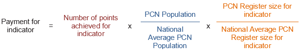

What is an IIF point worth for my PCN?
8 September 2021
The IIF scheme is roaring back to life this October, giving PCNs yet more to think about and work on. Despite it’s QOF-like nature, the way funding is allocated is surprisingly even more complex. This article summarises how the funding works.
Point Achievement
Starting with the easy bit: points win prizes. Each indicator is allocated a maximal number of points that can be gained based on the performance of the PCN in that indicator. For most, there is a minimum performance needed before any points are gained and after that, the points are allocated proportional to the performance, up to a maximum.
Example
For social prescribing (indicator PC-01), the thresholds for points are
set at
0.8-1.2% of the PCN
population having been referred in the full financial year. Therefore, if 0.6% of patients are referred,
the
PCN earns 0 points. If 1.6% are referred, the PCN earns all 20 points. If 1.0% are referred, the PCN earns
10 points.
Population & Prevalence Adjustment
Now it starts getting a bit tricky. What does a point really mean? NHS England states a point is worth £200. However, that is not the full story. That £200 is the amount per point an average sized PCN will get for an indicator, where they have an average disease prevalence for that indicator.
The rationale is that it would not be fair for a PCN with 100k patients to be paid the same amount in absolute terms as a PCN with 30k patients.
It would also be unfair for two PCNs with the same population to be paid the same for the learning disability indicator if one PCN has a very large LD register and the other a very small register, as the PCN with the larger register will need to do more work to achieve it .
Payments for each indicator are calculated by applying the following formula:

The list size adjustment applies to all indicators. However, several indicators do not need a prevalence adjustment, as they apply to the whole PCN population. Both adjustments will be based on the practice population data from January 2022.
The following example helps to explain this:
Example
Fictional PCN has a population of 70,000. For social
prescribing (PC-01), they have achieved all 20 points
by referring 1.3% of their patients to a social prescriber in the year. As the indicator applies to all
patients of any age, the register size is the same as the population size and therefore there is no
adjustment for prevalence (or adjustment=1). However, the PCN has a population which is 1.45 times the
national average, which is currently 48,274. Therefore, for the indicator, the PCN will be paid:
20 points
x
£200 per point x 1.45 list size adjustment = £5,800
For list size adjustment, the current PCN average population is: 48,274.
Thoughts on Prevalence Adjustments
The national averages for prevalence adjustments are much harder to come by. Some, such as the number of care home beds per PCN, are not available at all. Others could be estimated by looking at QOF data from 2019, but this is likely to be out by some margin given the age of the data. Most PCNs will have a broadly similar population mix, and therefore I think it is reasonable to base your estimations on there not being a significant prevalence adjustment for any indicator. The exceptions to this would be PCNs with atypical populations, such as having a large student population; an unusually old or young population; a large number of care home beds; or a large LD register.
Download Ready Reckoner SpreadsheetI have published a “ready reckoner” that makes it easy to track your performance and estimates the value of each indicator to your PCN. It adjusts the value of points using the above methodology to fit your PCN population. It assumes that there are no prevalence adjustments, so if you do have one of the atypical populations mentioned above, please bear that in mind.